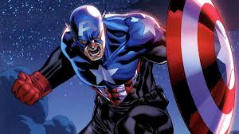
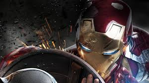
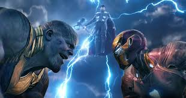
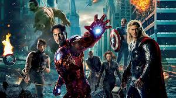
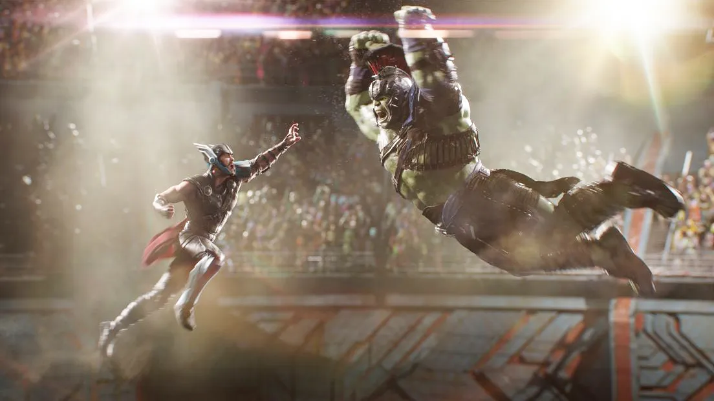
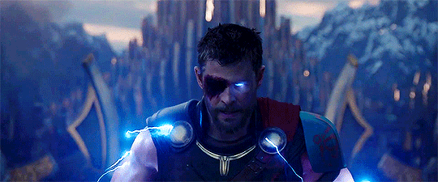
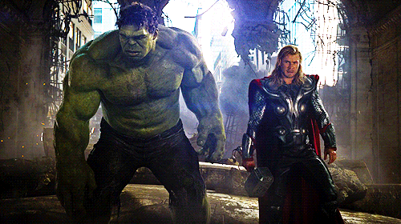
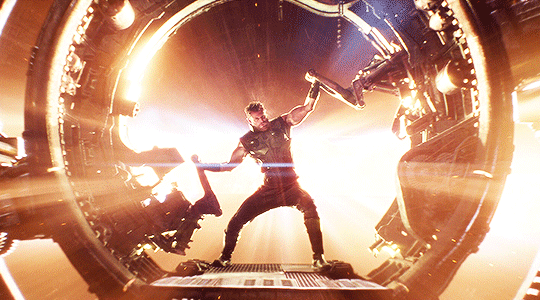

Heroes. Legends. Stories.
Hello guys Visit Marvel.com!








The Marvel Cinematic Universe (MCU) is an American media franchise and shared universe centered on a series of superhero films produced by Marvel Studios. The films are based on characters from American comic books published by Marvel Comics. The franchise also includes several television series, short films, digital series, and literature. The shared universe, much like the original Marvel Universe in comic books, was established by crossing over common plot elements, settings, cast, and characters.
Marvel Key Comics was founded in 1939 and later became one of the biggest comic book publishers in the world. It was co-created by legends like Stan Lee, Jack Kirby, and Steve Ditko.Marvel expanded into movies with the launch of the Marvel Cinematic Universe (MCU) in 2008. Since then, it has become one of the highest-grossing film franchises in history.
Marvel Studios releases its films in groups called "Phases", with the first three phases collectively known as "The Infinity Saga" and the following three phases as "The Multiverse Saga". The first MCU film, Iron Man (2008), began Phase One, which culminated in the 2012 crossover film The Avengers. Phase Two began with Iron Man 3 (2013) and concluded with Ant-Man (2015), while Phase Three began with Captain America: Civil War (2016) and concluded with Spider-Man: Far From Home (2019). Black Widow (2021) is the first film in Phase Four, which concluded with Black Panther: Wakanda Forever (2022), while Phase Five began with Ant-Man and the Wasp: Quantumania (2023) and concluded with Thunderbolts* (2025). Phase Six began with The Fantastic Four: First Steps (2025) and will conclude with Avengers: Secret Wars (2027).
By 2005, Marvel Entertainment was planning to produce its own films independently and distribute them through Paramount Pictures.[1] Previously, Marvel had co-produced several superhero films based on Marvel Comics with Columbia Pictures, New Line Cinema, 20th Century Fox, and others.[2] Marvel made relatively little profit from these licensing deals and wanted to get more money out of its films while maintaining artistic control of the projects and distribution.[3] Avi Arad, head of Marvel Entertainment's film division known as Marvel Films, was pleased with director Sam Raimi's Spider-Man film trilogy (2002�2007) at Sony Pictures and Columbia but was less enthused with some of the other films. Arad decided to form Marvel Studios, Hollywood's first major independent film studio since DreamWorks Pictures was founded in 1994. Kevin Feige, Arad's second-in-command,[4] realized that unlike Spider-Man, Blade, and the X-Men which were respectively licensed to Sony, New Line, and Fox, Marvel owned the rights to the Avengers team. Feige, a self-described "fanboy", envisioned combining these characters in a shared universe similar to the one created by Stan Lee and Jack Kirby for Marvel Comics in the 1960s.[5]
The second three phases are collectively known as "The Multiverse Saga", and include television series on Disney+.[36] Phase Four includes Black Widow (2021), Shang-Chi and the Legend of the Ten Rings (2021), Eternals (2021), Spider-Man: No Way Home (2021), Doctor Strange in the Multiverse of Madness (2022), Thor: Love and Thunder (2022), and Black Panther: Wakanda Forever (2022). Phase Five includes Ant-Man and the Wasp: Quantumania (2023), Guardians of the Galaxy Vol. 3 (2023), The Marvels (2023), Deadpool & Wolverine (2024), Captain America: Brave New World (2025), and Thunderbolts* (2025). Phase Six includes The Fantastic Four: First Steps (2025), Spider-Man: Brand New Day (2026), Avengers: Doomsday (2026), and Avengers: Secret Wars (2027).[13]
Further information: Marvel Cinematic Universe: Phase Four � Television series, Phase Five � Television series, Phase Six � Television series, and Marvel Studios Special Presentations Beginning with Phase Four, television series were included as part of the Phases in addition to their feature films. Each series is released on Disney+. Phase Four includes the series WandaVision (2021), The Falcon and the Winter Soldier (2021), the first season of Loki (2021), the first season of the animated series What If...? (2021), Hawkeye (2021), Moon Knight (2022), Ms. Marvel (2022), and She-Hulk: Attorney at Law (2022). The television specials Werewolf by Night (2022) and The Guardians of the Galaxy Holiday Special (2022) are also included in the phase. Phase Five includes Secret Invasion (2023), the second season of Loki (2023), the second and third seasons of What If...? (2023�24), Echo (2024), Agatha All Along (2024), the first season of the animated series Your Friendly Neighborhood Spider-Man (2025), the first season of Daredevil: Born Again (2025), and Ironheart (2025). Phase Six includes the animated miniseries Eyes of Wakanda (2025) and Marvel Zombies (2025), Wonder Man (2026), the second and third seasons of Born Again (2026�27), VisionQuest (2026), and the second season of Your Friendly Neighborhood Spider-Man.[13][127][128] An untitled Punisher television special (2026) is also expected to be released during the phase.[128]
Main article: Multiverse (Marvel Cinematic Universe) The Official Handbook of the Marvel Universe A to Z, Vol. 5, published in 2008, originally designated the Marvel Cinematic Universe as Earth-199999 within the continuity of Marvel's comic multiverse, a collection of fictional alternate universes, although, this designation was rarely used officially outside of the source material.[212] The television series Loki and What If...? were the first to explore the concept of the multiverse within the MCU,[213][214] as well as the film Spider-Man: No Way Home, which connected the MCU to other Spider-Man film franchises by featuring characters from Sam Raimi's Spider-Man trilogy (2002�2007), Marc Webb's The Amazing Spider-Man films (2012�14), and Sony's Spider-Man Universe (SSU).[215][216] The SSU film Venom: Let There Be Carnage (2021) briefly featured the main universe of the MCU as well.[216] In Doctor Strange in the Multiverse of Madness, the main universe of MCU events was designated as Earth-616 (a designation first referenced in Spider-Man: Far From Home), sharing the name of the main Marvel Comics universe, while another universe was designated as Earth-838.[217] Sony's animated film Spider-Man: Across the Spider-Verse (2023) references the events of No Way Home, citing the MCU's primary reality as Earth-199999.[218] 20th Century Fox's X-Men film series (2000�2020) is designated as Earth-10005 in Deadpool & Wolverine.[184] That film features several actors reprising their roles from the X-Men film series along with characters from Fox's films Daredevil (2003) and its spin-off Elektra (2005), Fantastic Four (2005) and its sequel Fantastic Four: Rise of the Silver Surfer (2007), and New Line Cinema's Blade film trilogy (1994�2004).[219][220] Phases Four, Five, and Six comprise "The Multiverse Saga".[36]
With the release of The Marvel Cinematic Universe: An Official Timeline in October 2023, Feige wrote in its foreword that Marvel Studios only considered, at that time, projects developed by them in their first four phases as part of their "Sacred Timeline", but acknowledged the history of other Marvel films and television series that would exist in the larger multiverse and said they were "canonical to Marvel".[221] In January 2024, Winderbaum acknowledged that Marvel Studios had previously been "a little bit cagey" about what was part of their Sacred Timeline, noting how there had been the corporate divide between what Marvel Studios created and what Marvel Television created. He continued that as time had passed, Marvel Studios began to see "how well integrated the [Marvel Television] stories are" and personally felt confident in saying Marvel Television's Daredevil was part of the Sacred Timeline.[222]
Made by - Chetan Ashok Shakhapure
Branch - ENTC
CT - AI(05)
PRN - 202501070075
Email - chetanshakhapure@gmail.com